14 SDM algorithms
Introduction to different SDM algorithms.
14.1 Exercises - Practice with models
For this exercise, we’re going to play with a superhero dataset! Although this is an SDM focused course, we don’t want to spoil the surprises coming when you start playing with the environmental data.
We want to run models for two questions:
- CLASSIFICATION: Is there a bias towards alignment? (i.e. can we predict if a character will be good or bad)
- REGRESSION: Are men stronger than women in the comics? (i.e., can we predict total power, and is Gender one of the most important predictors? Or is there something else that predicts total power)
As per the slides, we’re going to do a few things:
- Explore and clean our data
- Use one-hot-encoding to help deal with many categories
- Build a single decision tree and visualise it. Re-build the tree with different settings
- Run a model with gbm.step and visualise the train/test plot, as well as the variable importance plot
- Run the same model with random forests and look at the differences in the outputs
Pick either the classification or regression problem. Solution for the classification problem are included in this document if you need a poke in the right direction. We run the GBM model ONLY for the regression problem here, but you could try out with RF if you wanted
Let’s start by loading libraries
library(tidyverse) ## Isn't tidyverse awesome?
library(dismo) ## This package contains the gbm.step command
library(randomForest) ## This package contains the randomForest
library(rpart) ## This package contains a series of useful decision tree functions
library(rpart.plot)
library(gbm)14.1.1 Load and clean the data
Now that we’ve got some libraries ready, let’s load and clean our SUPERHERO dataset in preparation for our modelling.
## Parsed with column specification:
## cols(
## .default = col_character(),
## `Unnamed: 0` = col_double(),
## Intelligence = col_double(),
## Strength = col_double(),
## Speed = col_double(),
## Durability = col_double(),
## Power = col_double(),
## Combat = col_double(),
## TotalPower = col_double()
## )## See spec(...) for full column specifications.Supes <- readr::read_csv('SuperheroDataset.csv')For the purposes of this exercise, we’re going to use the following columns: Name, Intelligence, Strength, Speed, Durability, Power, Combat, Gender, Race, Creator, Alignment, Total Power. Use the tidyverse to extract those columns.
SuperData <- Supes %>%
dplyr::select(Name, Intelligence:Combat, Alignment:Race, Creator, TotalPower)14.1.1.1 Exploring the data
If you explore the data a little bit, you’ll be able to see some of the interesting quirks of the dataset. Use ggplot2 (or base plot if you’re feeling lazy ;) ).
SuperData %>%
filter(!is.na(Intelligence))%>%
ggplot(aes(x=Intelligence,y=Strength)) + geom_point() + geom_smooth(method=lm) + theme_bw()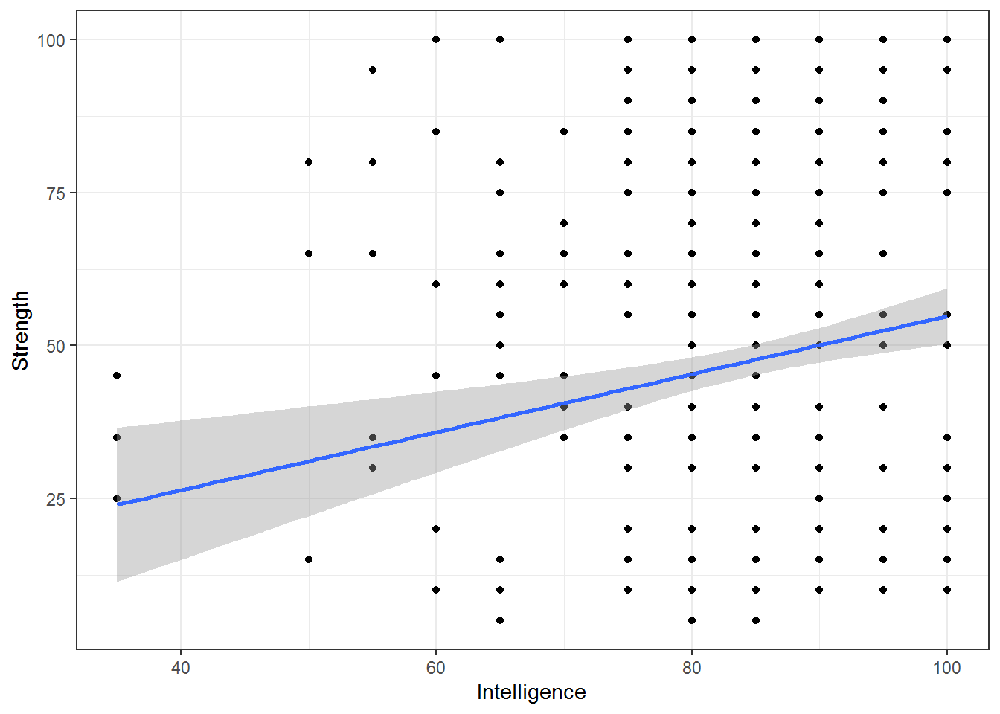
## Looking at the line, it seems like the problem is that there are some extreme low values
## of intelligence. Outliers perhaps?? Try to find out who those values belong to, and
## that may help you determine if they should be included in the analysis
SuperData %>%
filter(!is.na(Combat))%>%
ggplot(aes(x=Combat,y=Strength)) + geom_point() + geom_smooth(method=lm) + theme_bw()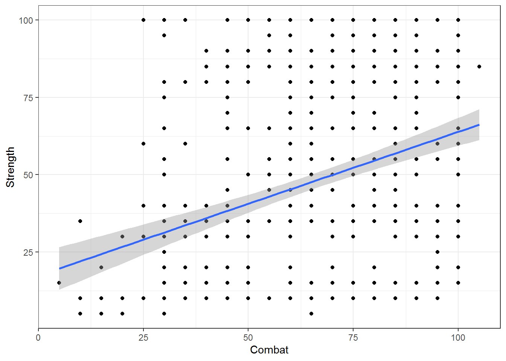
## We can also filter the data conditionally to explore the dataset with specific classes, e.g.:
SuperData %>%
filter(!is.na(Combat),Gender=='Female')%>%
ggplot(aes(x=Combat,y=Strength)) + geom_point() + geom_smooth(method=lm) + theme_bw()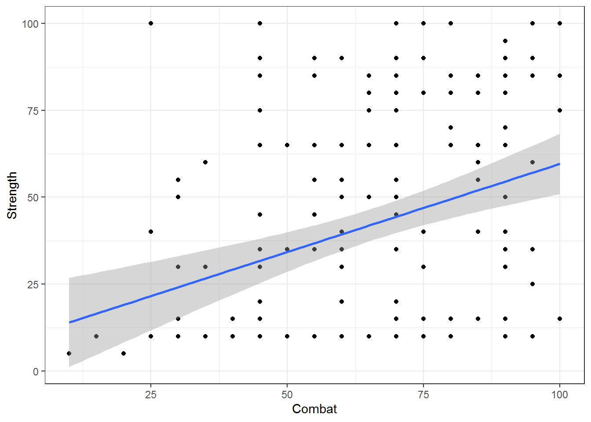
library(GGally)
## This is a great library for exploring data quickly! Rather than coding everything bit by bit
quant_df <- SuperData %>% dplyr::select(Intelligence:Gender,TotalPower)
ggpairs(quant_df, progress = FALSE)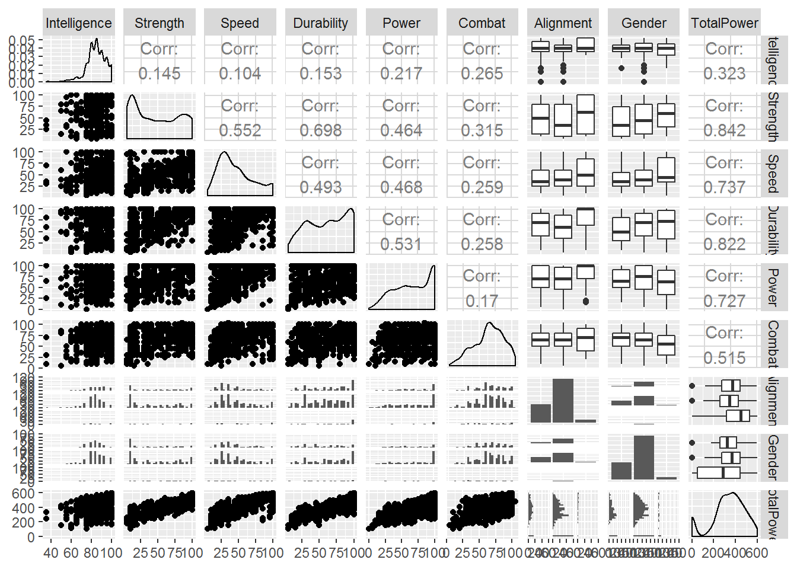
Note that ‘total power’ is highly correlated with strength, speed, durability and power. This could impact how we interpret the regression problem later as these variables may wash out the signal we’re trying to explore. Not a bad thing if we’re just trying to make predictions! But if we’re trying to answer a specific question, it could ‘muddy the waters’.
If you have checked out some of the variables, you might notice two things:
- Race and Creator have too many categories!
- There are a number of Creators that are only used once, or may not be appropriate to include.
length(unique(SuperData$Race)) ## Number of unique levels in Race## [1] 63length(unique(SuperData$Creator)) ## Same only for creator## [1] 23## Let's just check out Creator:
unique(SuperData$Creator)## [1] "Dark Horse Comics" "DC Comics" "George Lucas"
## [4] "HarperCollins" "Ian Fleming" "Icon Comics"
## [7] "IDW Publishing" "Image Comics" "J. K. Rowling"
## [10] "J. R. R. Tolkien" "Marvel Comics" "Mattel"
## [13] "Microsoft" "NBC - Heroes" "Rebellion"
## [16] "Shueisha" "Sony Pictures" "South Park"
## [19] "Star Trek" "SyFy" "Team Epic TV"
## [22] "Universal Studios" "Wildstorm"SuperData %>% count(Creator)## # A tibble: 23 x 2
## Creator n
## <chr> <int>
## 1 Dark Horse Comics 19
## 2 DC Comics 219
## 3 George Lucas 15
## 4 HarperCollins 6
## 5 Ian Fleming 1
## 6 Icon Comics 4
## 7 IDW Publishing 4
## 8 Image Comics 14
## 9 J. K. Rowling 1
## 10 J. R. R. Tolkien 1
## 11 Marvel Comics 395
## 12 Mattel 2
## 13 Microsoft 1
## 14 NBC - Heroes 19
## 15 Rebellion 1
## 16 Shueisha 4
## 17 Sony Pictures 2
## 18 South Park 1
## 19 Star Trek 6
## 20 SyFy 5
## 21 Team Epic TV 5
## 22 Universal Studios 1
## 23 Wildstorm 4There are many classes here that may not be appropriate to include. For example, creator Ian Fleming (creator of James Bond) only has one character. This dataset also has Star Trek characters. So, we decide here to filter out the appropriate classes (keeping Marvel Comics, DC Comics, Dark Horse Comics, and Image Comics).
Note the usage of %in%
FilteredSupes <- SuperData %>%
dplyr::filter(Creator %in% c('Marvel Comics','DC Comics','Dark Horse Comics','Image Comics')) %>%
dplyr::filter(!is.na(Intelligence))
## we do this last part to remove NA data for cleanliness, though trees don't require you to do this!
FilteredSupes## # A tibble: 586 x 12
## Name Intelligence Strength Speed Durability Power Combat
## <chr> <dbl> <dbl> <dbl> <dbl> <dbl> <dbl>
## 1 Abe Sapien 95 30 35 65 100 85
## 2 Alien 80 30 45 90 60 60
## 3 Angel 90 30 60 90 100 75
## 4 Buffy 85 30 45 70 50 60
## 5 Dash 65 15 95 60 20 30
## 6 Elastigirl 85 35 35 95 55 70
## 7 Hellboy 85 55 25 95 75 75
## 8 Jack-Jack 35 35 70 80 100 10
## 9 Jason Voorhees 85 35 25 100 100 50
## 10 Liz Sherman 55 35 30 45 75 50
## 11 Mr Incredible 80 85 35 95 30 40
## 12 Predator 85 30 25 85 100 90
## 13 T-1000 90 35 35 100 100 75
## 14 T-800 90 35 20 60 75 65
## 15 T-850 90 80 25 90 85 75
## 16 T-X 90 65 30 85 100 80
## 17 Violet Parr 80 10 15 50 80 15
## 18 Abin Sur 80 90 55 65 100 65
## 19 Adam Strange 85 10 35 40 40 50
## 20 Alfred Pennyworth 85 10 20 10 10 55
## 21 Amazo 85 100 85 100 100 100
## 22 Animal Man 80 50 50 85 75 80
## 23 Anti-Monitor 95 100 50 100 100 90
## 24 Aquababy 60 20 15 15 40 15
## 25 Aqualad 85 45 45 75 90 60
## 26 Aquaman 95 85 80 80 100 80
## 27 Ares 90 100 75 100 100 100
## 28 Arsenal 80 55 60 60 65 85
## 29 Atlas 85 100 45 100 30 80
## 30 Atom 90 95 75 95 90 85
## Alignment Gender Race Creator TotalPower
## <chr> <chr> <chr> <chr> <dbl>
## 1 good Male Icthyo Sapien Dark Horse Comics 410
## 2 bad Male Xenomorph XX121 Dark Horse Comics 365
## 3 good Male Vampire Dark Horse Comics 445
## 4 good Female Human Dark Horse Comics 340
## 5 good Male Human Dark Horse Comics 285
## 6 good Female Human Dark Horse Comics 375
## 7 good Male Demon Dark Horse Comics 410
## 8 good Male Human Dark Horse Comics 330
## 9 bad Male Human Dark Horse Comics 395
## 10 good Female Human Dark Horse Comics 290
## 11 good Male Human Dark Horse Comics 365
## 12 bad Male Yautja Dark Horse Comics 415
## 13 bad Male Android Dark Horse Comics 435
## 14 bad Male Cyborg Dark Horse Comics 345
## 15 bad Male Cyborg Dark Horse Comics 445
## 16 bad Female Cyborg Dark Horse Comics 450
## 17 good Female Human Dark Horse Comics 250
## 18 good Male Ungaran DC Comics 455
## 19 good Male Human DC Comics 260
## 20 good Male Human DC Comics 190
## 21 bad Male Android DC Comics 570
## 22 good Male Human DC Comics 420
## 23 bad Male God / Eternal DC Comics 535
## 24 good Male Human DC Comics 165
## 25 good Male Atlantean DC Comics 400
## 26 good Male Atlantean DC Comics 520
## 27 neutral Male God / Eternal DC Comics 565
## 28 good Male Human DC Comics 405
## 29 bad Male God / Eternal DC Comics 440
## 30 good Male Human DC Comics 530
## # ... with 556 more rows## How many races do we now have??
length(unique(FilteredSupes$Race))## [1] 53Now let’s explore this again.
quant_df <- FilteredSupes %>% dplyr::select(Intelligence:Gender,TotalPower)
ggpairs(quant_df, progress = FALSE)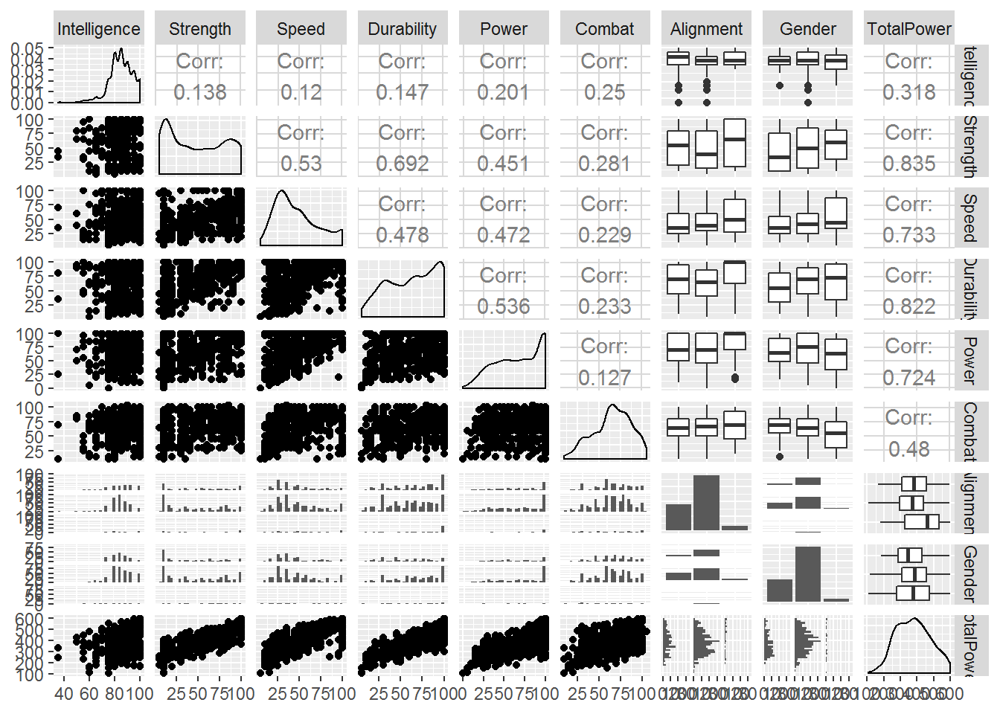
Not much has really changed, as we have not removed too many rows, which is good thing because it means that those data we removed won’t impact the final conclusions in any major way. This just simplifies our data cleaning for this particular exercise. However, we still have lots of ‘Race’ categories.
FilteredSupes %>% count(Race)## # A tibble: 53 x 2
## Race n
## <chr> <int>
## 1 Alien 8
## 2 Amazon 2
## 3 Android 8
## 4 Animal 2
## 5 Asgardian 5
## 6 Atlantean 5
## 7 Bizarro 1
## 8 Bolovaxian 1
## 9 Clone 1
## 10 Cosmic Entity 4
## 11 Cyborg 9
## 12 Czarnian 1
## 13 DemiHumanGod 2
## 14 Demon 6
## 15 Eternal 3
## 16 Flora Colossus 1
## 17 Frost Giant 2
## 18 God / Eternal 16
## 19 Gorilla 1
## 20 Human 384
## 21 Human / Altered 2
## 22 Human / Cosmic 2
## 23 Human / Radiation 12
## 24 HumanHumanInhuman 1
## 25 HumanHumanKree 2
## 26 HumanHumanSpartoi 1
## 27 HumanHumanVuldarian 1
## 28 Icthyo Sapien 1
## 29 Inhuman 4
## 30 Kakarantharaian 1
## # ... with 23 more rowsLooking at the breakdown of Race, there are many with a count of 1. These can cause some issues when trying to do any cross validation… so we should remove them.
FilteredSupes <- FilteredSupes %>% add_count(Race) %>% filter(n > 1)
FilteredSupes %>% count(Race)## # A tibble: 25 x 2
## Race n
## <chr> <int>
## 1 Alien 8
## 2 Amazon 2
## 3 Android 8
## 4 Animal 2
## 5 Asgardian 5
## 6 Atlantean 5
## 7 Cosmic Entity 4
## 8 Cyborg 9
## 9 DemiHumanGod 2
## 10 Demon 6
## 11 Eternal 3
## 12 Frost Giant 2
## 13 God / Eternal 16
## 14 Human 384
## 15 Human / Altered 2
## 16 Human / Cosmic 2
## 17 Human / Radiation 12
## 18 HumanHumanKree 2
## 19 Inhuman 4
## 20 Kryptonian 7
## 21 Metahuman 2
## 22 Mutant 57
## 23 New God 3
## 24 Symbiote 9
## 25 Vampire 214.1.2 One hot encoding!
Race has MANY categories! This COULD cause the trees to get swamped by this predictor. Also, by one-hot encoding, we can keep data that would otherwise get thrown out if just filtering out categories. For example, if we removed the ‘cyborg’ category by way of filtering, those character data would be removed as well (they might be useful). One hot encoding turns each category into a binary variable. Can be done easily in tidyverse!
OOEdata <- FilteredSupes %>%
separate_rows(Race)%>%
mutate(count = 1) %>%
spread(Race, count, fill = 0, sep = "_")
OOEdata## # A tibble: 558 x 38
## Name Intelligence Strength Speed Durability Power Combat
## <chr> <dbl> <dbl> <dbl> <dbl> <dbl> <dbl>
## 1 Angel 90 30 60 90 100 75
## 2 Buffy 85 30 45 70 50 60
## 3 Dash 65 15 95 60 20 30
## 4 Elastigirl 85 35 35 95 55 70
## 5 Hellboy 85 55 25 95 75 75
## 6 Jack-Jack 35 35 70 80 100 10
## 7 Jason Voorhees 85 35 25 100 100 50
## 8 Liz Sherman 55 35 30 45 75 50
## 9 Mr Incredible 80 85 35 95 30 40
## 10 T-1000 90 35 35 100 100 75
## 11 T-800 90 35 20 60 75 65
## 12 T-850 90 80 25 90 85 75
## 13 T-X 90 65 30 85 100 80
## 14 Violet Parr 80 10 15 50 80 15
## 15 Adam Strange 85 10 35 40 40 50
## 16 Alfred Pennyworth 85 10 20 10 10 55
## 17 Amazo 85 100 85 100 100 100
## 18 Animal Man 80 50 50 85 75 80
## 19 Anti-Monitor 95 100 50 100 100 90
## 20 Aquababy 60 20 15 15 40 15
## 21 Aqualad 85 45 45 75 90 60
## 22 Aquaman 95 85 80 80 100 80
## 23 Ares 90 100 75 100 100 100
## 24 Arsenal 80 55 60 60 65 85
## 25 Atlas 85 100 45 100 30 80
## 26 Atom 90 95 75 95 90 85
## 27 Atom Girl 75 10 25 30 40 45
## 28 Atom II 95 10 35 45 40 60
## 29 Atom IV 85 55 55 55 60 65
## 30 Azrael 85 20 20 20 35 80
## Alignment Gender Creator TotalPower n Race_Alien
## <chr> <chr> <chr> <dbl> <int> <dbl>
## 1 good Male Dark Horse Comics 445 2 0
## 2 good Female Dark Horse Comics 340 384 0
## 3 good Male Dark Horse Comics 285 384 0
## 4 good Female Dark Horse Comics 375 384 0
## 5 good Male Dark Horse Comics 410 6 0
## 6 good Male Dark Horse Comics 330 384 0
## 7 bad Male Dark Horse Comics 395 384 0
## 8 good Female Dark Horse Comics 290 384 0
## 9 good Male Dark Horse Comics 365 384 0
## 10 bad Male Dark Horse Comics 435 8 0
## 11 bad Male Dark Horse Comics 345 9 0
## 12 bad Male Dark Horse Comics 445 9 0
## 13 bad Female Dark Horse Comics 450 9 0
## 14 good Female Dark Horse Comics 250 384 0
## 15 good Male DC Comics 260 384 0
## 16 good Male DC Comics 190 384 0
## 17 bad Male DC Comics 570 8 0
## 18 good Male DC Comics 420 384 0
## 19 bad Male DC Comics 535 16 0
## 20 good Male DC Comics 165 384 0
## 21 good Male DC Comics 400 5 0
## 22 good Male DC Comics 520 5 0
## 23 neutral Male DC Comics 565 16 0
## 24 good Male DC Comics 405 384 0
## 25 bad Male DC Comics 440 16 0
## 26 good Male DC Comics 530 384 0
## 27 good Female DC Comics 225 384 0
## 28 good Male DC Comics 285 384 0
## 29 good Male DC Comics 375 384 0
## 30 good Male DC Comics 260 384 0
## Race_Altered Race_Amazon Race_Android Race_Animal Race_Asgardian
## <dbl> <dbl> <dbl> <dbl> <dbl>
## 1 0 0 0 0 0
## 2 0 0 0 0 0
## 3 0 0 0 0 0
## 4 0 0 0 0 0
## 5 0 0 0 0 0
## 6 0 0 0 0 0
## 7 0 0 0 0 0
## 8 0 0 0 0 0
## 9 0 0 0 0 0
## 10 0 0 1 0 0
## 11 0 0 0 0 0
## 12 0 0 0 0 0
## 13 0 0 0 0 0
## 14 0 0 0 0 0
## 15 0 0 0 0 0
## 16 0 0 0 0 0
## 17 0 0 1 0 0
## 18 0 0 0 0 0
## 19 0 0 0 0 0
## 20 0 0 0 0 0
## 21 0 0 0 0 0
## 22 0 0 0 0 0
## 23 0 0 0 0 0
## 24 0 0 0 0 0
## 25 0 0 0 0 0
## 26 0 0 0 0 0
## 27 0 0 0 0 0
## 28 0 0 0 0 0
## 29 0 0 0 0 0
## 30 0 0 0 0 0
## Race_Atlantean Race_Cosmic Race_Cyborg Race_DemiHumanGod Race_Demon
## <dbl> <dbl> <dbl> <dbl> <dbl>
## 1 0 0 0 0 0
## 2 0 0 0 0 0
## 3 0 0 0 0 0
## 4 0 0 0 0 0
## 5 0 0 0 0 1
## 6 0 0 0 0 0
## 7 0 0 0 0 0
## 8 0 0 0 0 0
## 9 0 0 0 0 0
## 10 0 0 0 0 0
## 11 0 0 1 0 0
## 12 0 0 1 0 0
## 13 0 0 1 0 0
## 14 0 0 0 0 0
## 15 0 0 0 0 0
## 16 0 0 0 0 0
## 17 0 0 0 0 0
## 18 0 0 0 0 0
## 19 0 0 0 0 0
## 20 0 0 0 0 0
## 21 1 0 0 0 0
## 22 1 0 0 0 0
## 23 0 0 0 0 0
## 24 0 0 0 0 0
## 25 0 0 0 0 0
## 26 0 0 0 0 0
## 27 0 0 0 0 0
## 28 0 0 0 0 0
## 29 0 0 0 0 0
## 30 0 0 0 0 0
## Race_Entity Race_Eternal Race_Frost Race_Giant Race_God Race_Human
## <dbl> <dbl> <dbl> <dbl> <dbl> <dbl>
## 1 0 0 0 0 0 0
## 2 0 0 0 0 0 1
## 3 0 0 0 0 0 1
## 4 0 0 0 0 0 1
## 5 0 0 0 0 0 0
## 6 0 0 0 0 0 1
## 7 0 0 0 0 0 1
## 8 0 0 0 0 0 1
## 9 0 0 0 0 0 1
## 10 0 0 0 0 0 0
## 11 0 0 0 0 0 0
## 12 0 0 0 0 0 0
## 13 0 0 0 0 0 0
## 14 0 0 0 0 0 1
## 15 0 0 0 0 0 1
## 16 0 0 0 0 0 1
## 17 0 0 0 0 0 0
## 18 0 0 0 0 0 1
## 19 0 1 0 0 1 0
## 20 0 0 0 0 0 1
## 21 0 0 0 0 0 0
## 22 0 0 0 0 0 0
## 23 0 1 0 0 1 0
## 24 0 0 0 0 0 1
## 25 0 1 0 0 1 0
## 26 0 0 0 0 0 1
## 27 0 0 0 0 0 1
## 28 0 0 0 0 0 1
## 29 0 0 0 0 0 1
## 30 0 0 0 0 0 1
## Race_HumanHumanKree Race_Inhuman Race_Kryptonian Race_Metahuman
## <dbl> <dbl> <dbl> <dbl>
## 1 0 0 0 0
## 2 0 0 0 0
## 3 0 0 0 0
## 4 0 0 0 0
## 5 0 0 0 0
## 6 0 0 0 0
## 7 0 0 0 0
## 8 0 0 0 0
## 9 0 0 0 0
## 10 0 0 0 0
## 11 0 0 0 0
## 12 0 0 0 0
## 13 0 0 0 0
## 14 0 0 0 0
## 15 0 0 0 0
## 16 0 0 0 0
## 17 0 0 0 0
## 18 0 0 0 0
## 19 0 0 0 0
## 20 0 0 0 0
## 21 0 0 0 0
## 22 0 0 0 0
## 23 0 0 0 0
## 24 0 0 0 0
## 25 0 0 0 0
## 26 0 0 0 0
## 27 0 0 0 0
## 28 0 0 0 0
## 29 0 0 0 0
## 30 0 0 0 0
## Race_Mutant Race_New Race_Radiation Race_Symbiote Race_Vampire
## <dbl> <dbl> <dbl> <dbl> <dbl>
## 1 0 0 0 0 1
## 2 0 0 0 0 0
## 3 0 0 0 0 0
## 4 0 0 0 0 0
## 5 0 0 0 0 0
## 6 0 0 0 0 0
## 7 0 0 0 0 0
## 8 0 0 0 0 0
## 9 0 0 0 0 0
## 10 0 0 0 0 0
## 11 0 0 0 0 0
## 12 0 0 0 0 0
## 13 0 0 0 0 0
## 14 0 0 0 0 0
## 15 0 0 0 0 0
## 16 0 0 0 0 0
## 17 0 0 0 0 0
## 18 0 0 0 0 0
## 19 0 0 0 0 0
## 20 0 0 0 0 0
## 21 0 0 0 0 0
## 22 0 0 0 0 0
## 23 0 0 0 0 0
## 24 0 0 0 0 0
## 25 0 0 0 0 0
## 26 0 0 0 0 0
## 27 0 0 0 0 0
## 28 0 0 0 0 0
## 29 0 0 0 0 0
## 30 0 0 0 0 0
## # ... with 528 more rowsNow, you can very easily explore each category!!
Remember though, these need to be converted to factors or else they’ll be confused as integers!!
magrittr package can help do this easily
library(magrittr)
columns <- names(OOEdata)[12:length(names(OOEdata))]
OOEdata <- OOEdata %<>% mutate_at(columns, funs(factor(.)))
quant_df <- OOEdata %>%
dplyr::select(Intelligence:TotalPower, Race_Human, Race_Cyborg, Race_Mutant)
ggpairs(quant_df, progress = FALSE)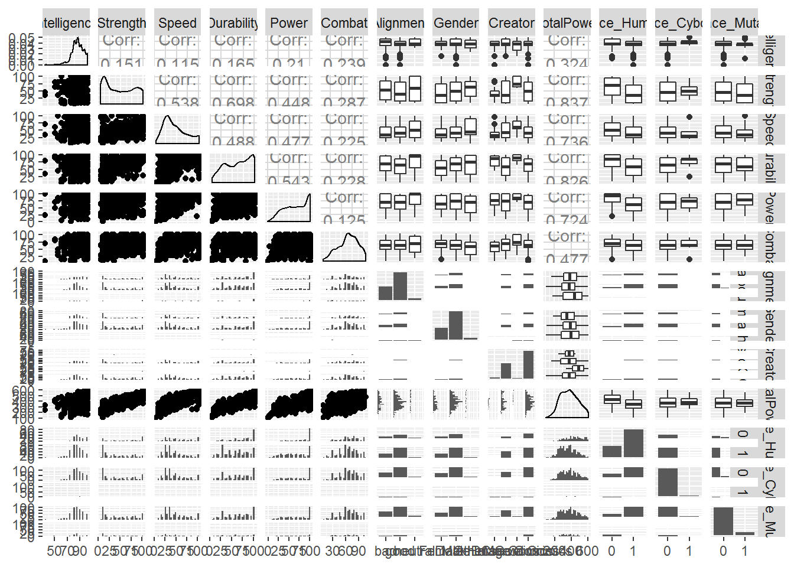
This figure is very messy to look at here in R Markdown - but if you eliminate a few of the variables, or use R Studio’s zoom button in the plot window, you should be able to explore this!
14.1.3 The models
14.1.3.1 CART
Let’s start by building ourselves a single tree. Feel free to try this with different variables.
14.1.3.1.1 Classification example
## Let's remove 'neutral' characters from our dataset so we can look at if we can predict
## if they are good or evil. We'll also select just a few columns to work with for
## simplicity's sake
modeldat <- OOEdata %>%
dplyr::filter(Alignment!='neutral') %>%
dplyr::select(Intelligence:TotalPower, Race_Animal, Race_Human, Race_Demon, Race_God,
Race_Asgardian, Race_Mutant, Race_Android)
form <- as.formula(paste("Alignment ~ ",paste(names(modeldat),collapse='+')))
form <- update(form, . ~ . -Alignment)
## Check out help(rpart.control) for a list of the parameters that you can change!
## Try playing with these to get an idea of how they impact a single tree
## To run a regression model, change method to 'anova'
treemod <- rpart(form, method='class',data=modeldat,cp=0.001,maxdepth=6)
rpart.plot(treemod,cex=0.7)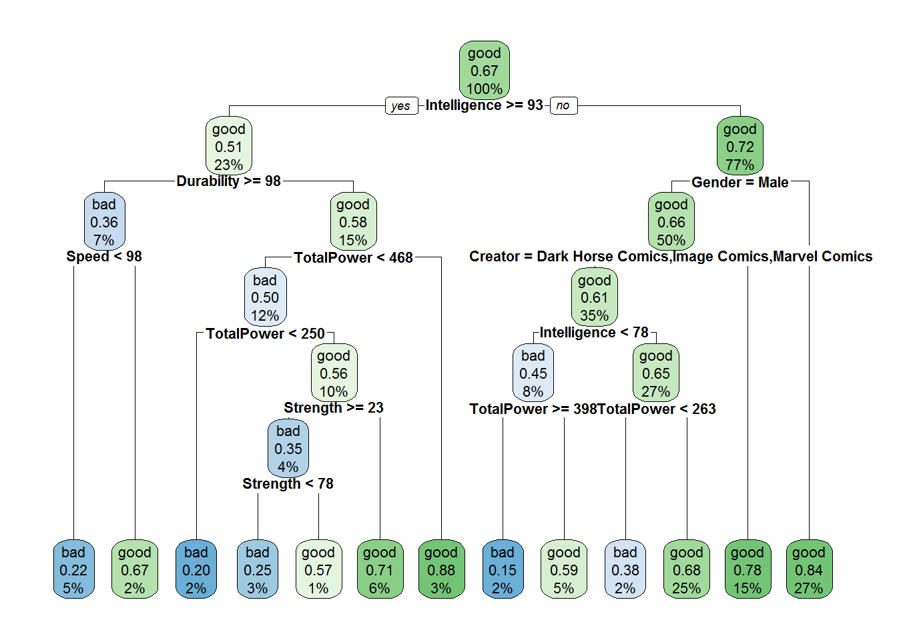
14.1.3.2 GBM.step
We’re going to ‘skip’ a step here to a degree and use the gbm.step algorithm, an extension to gbm (generalized boosted regression modelling/ boosted regression trees). gbm.step will calculate the optimal tree to use by way of cross validation, rather than just building a pile of trees and letting the user decide.
We’ll just use the model we had above (classification). Unfortunately, gbm.step uses column index values, rather than names!
gbm.step is not particularly well oriented towards multiple class target / dependent variables gbm.step needs to use a data.frame (can’t use a tibble), and in the target MUST be a factor gbm.step ALSO needs the TARGET variable to be in the form 0/1
modeldat <- modeldat %>%
mutate(Alignment_targ = case_when(Alignment == 'good' ~ 0, Alignment == 'bad' ~ 1 )) %>%
mutate_at(c('Alignment_targ','Gender','Creator'), funs(factor(.)))
modeldf <- data.frame(modeldat)
modeldf$Alignment_targ <- as.numeric(as.character(modeldf$Alignment_targ))
gbmModel <- gbm.step(data=modeldf,gbm.=c(1:6,8:17),gbm.y=18,family="bernoulli",
tree.complexity = 10,learning.rate=0.001,bag.fraction=0.8,max.trees = 8000)##
##
## GBM STEP - version 2.9
##
## Performing cross-validation optimisation of a boosted regression tree model
## for Alignment_targ and using a family of bernoulli
## Using 531 observations and 16 predictors
## creating 10 initial models of 50 trees
##
## folds are stratified by prevalence
## total mean deviance = 1.2623
## tolerance is fixed at 0.0013
## ntrees resid. dev.
## 50 1.256
## now adding trees...
## 100 1.2506
## 150 1.2457
## 200 1.2411
## 250 1.2376
## 300 1.2343
## 350 1.2314
## 400 1.2289
## 450 1.2266
## 500 1.2244
## 550 1.2228
## 600 1.2212
## 650 1.22
## 700 1.219
## 750 1.2182
## 800 1.2178
## 850 1.2171
## 900 1.2167
## 950 1.2162
## 1000 1.2162
## 1050 1.216
## 1100 1.2164
## 1150 1.2164
## 1200 1.2162
## 1250 1.2165
## 1300 1.2167
## 1350 1.2171
## 1400 1.2176
## 1450 1.2183
## 1500 1.2188
## 1550 1.2194## fitting final gbm model with a fixed number of 1050 trees for Alignment_targ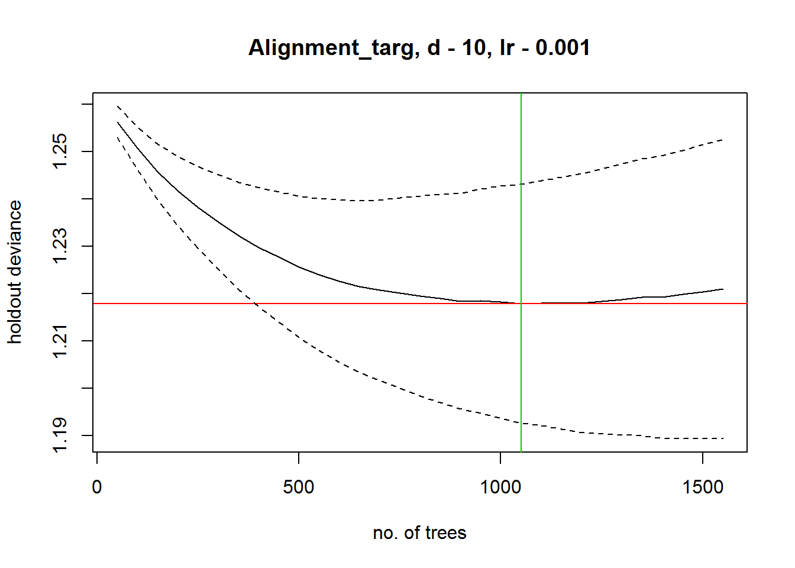
##
## mean total deviance = 1.262
## mean residual deviance = 1.048
##
## estimated cv deviance = 1.216 ; se = 0.018
##
## training data correlation = 0.608
## cv correlation = 0.219 ; se = 0.047
##
## training data AUC score = 0.857
## cv AUC score = 0.645 ; se = 0.03
##
## elapsed time - 0.3 minutesTo get a summary of the output that shows the variable importance rankings:
summary(gbmModel)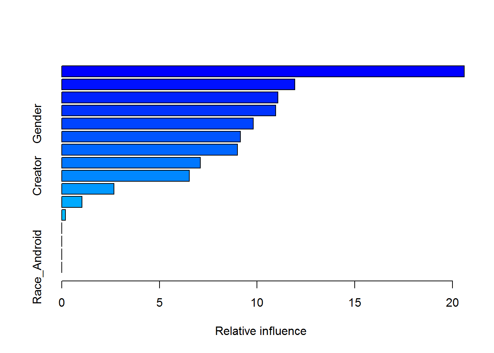
## var rel.inf
## Intelligence Intelligence 20.6827250
## Speed Speed 11.4610143
## Durability Durability 11.2729006
## TotalPower TotalPower 10.8897347
## Gender Gender 9.8297482
## Power Power 9.6046351
## Combat Combat 8.8328880
## Creator Creator 6.8139959
## Strength Strength 6.5173526
## Race_Human Race_Human 2.8977875
## Race_Mutant Race_Mutant 1.0265049
## Race_God Race_God 0.1707131
## Race_Animal Race_Animal 0.0000000
## Race_Demon Race_Demon 0.0000000
## Race_Asgardian Race_Asgardian 0.0000000
## Race_Android Race_Android 0.0000000You can also plot the partial dependence plots, and then take it further to explore interactions by plotting the perspective plots
gbm.plot(gbmModel,n.plots=5,write.title=F)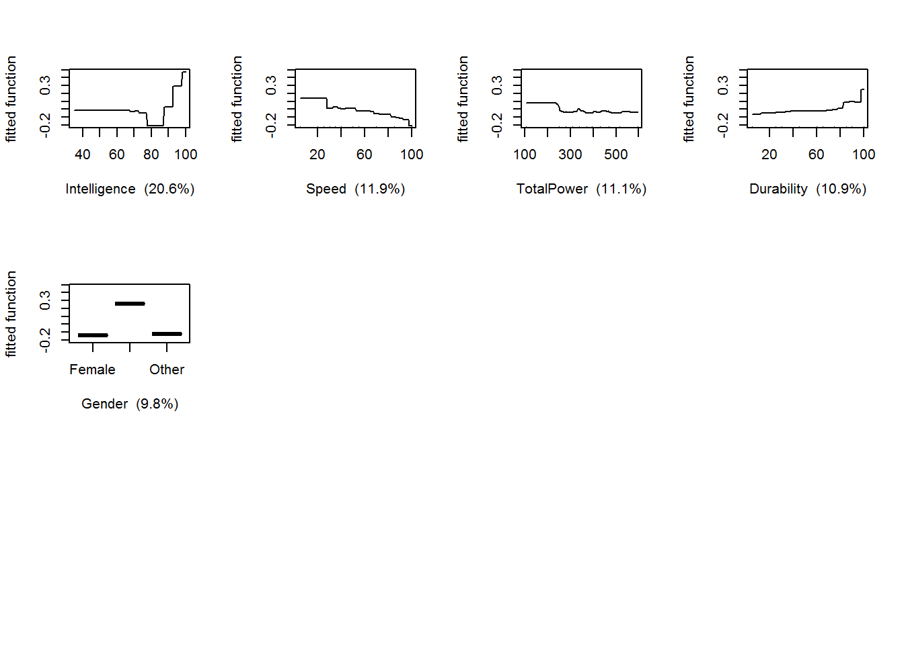
## the gbm perspective plot for intelligence and speed versus the fitted values(z)
gbm.perspec(gbmModel,1,3,z.range=c(0.15,0.6),theta=205)## maximum value = 0.53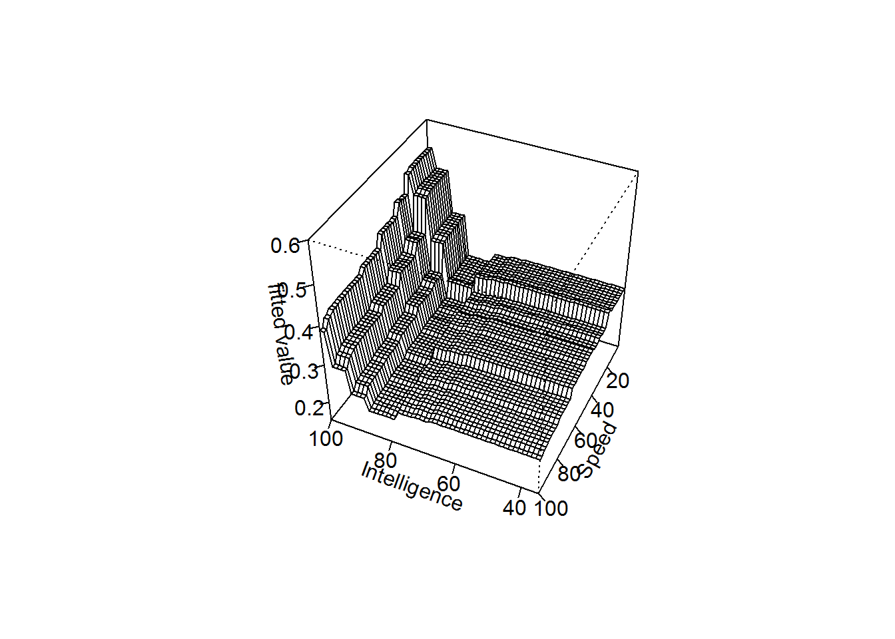
14.1.3.3 random forest
Random forest is much more flexible than gbm.step in some respects - for example, you aren’t being forced to use column indices!
This model can be set up much like the CART model from before.
modeldat <- OOEdata %>%
dplyr::filter(Alignment!='neutral') %>%
dplyr::select(Intelligence:TotalPower, Race_Animal, Race_Human, Race_Demon, Race_God,
Race_Asgardian, Race_Mutant, Race_Android)
## Have to make sure these things are formatted as factors
modeldat <- modeldat %>%
mutate(Alignment_targ = case_when(Alignment == 'good' ~ 0, Alignment == 'bad' ~ 1 )) %>%
mutate_at(c('Alignment_targ','Gender','Creator'), funs(factor(.)))
form <- as.formula(paste("Alignment_targ ~ ",paste(names(modeldat),collapse='+')))
form <- update(form, . ~ . -Alignment)
form <- update(form, . ~ . -Alignment_targ)
rf.model <- randomForest(data=data.frame(modeldat),form,mtry=3,maxnodes=10)
importance(rf.model)## MeanDecreaseGini
## Intelligence 5.61640111
## Strength 2.75120205
## Speed 3.26378212
## Durability 3.68751428
## Power 2.00164506
## Combat 2.69710754
## Gender 3.65273986
## Creator 1.95510481
## TotalPower 3.53433695
## Race_Animal 0.08585302
## Race_Human 0.77356915
## Race_Demon 0.19936608
## Race_God 0.70108698
## Race_Asgardian 0.13385622
## Race_Mutant 0.57543918
## Race_Android 0.43527047partialPlot(rf.model,data.frame(modeldat),Intelligence)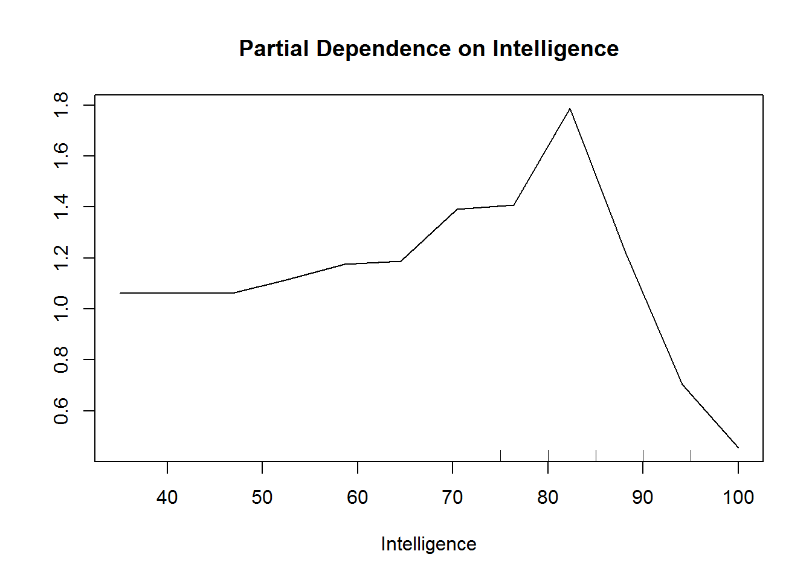
partialPlot(rf.model,data.frame(modeldat),Gender)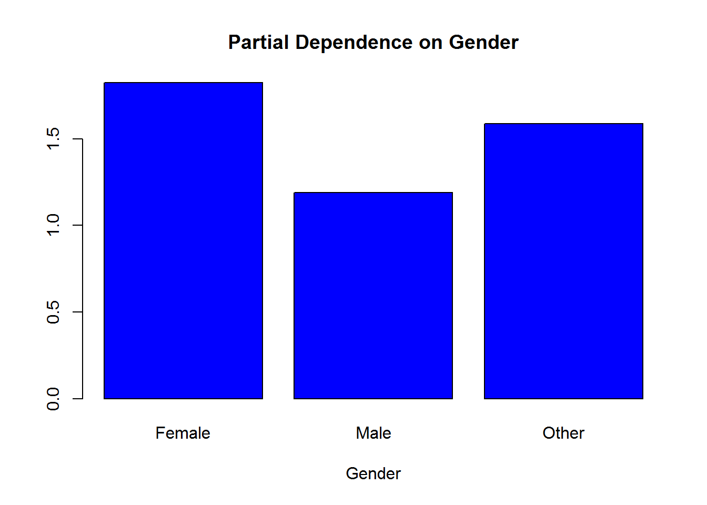
The partial dependence plot will focus on the FIRST class. So if you’re using 0/1, then 0 will be focused on in the interpretation of the plots. This can be changed with the ‘which.class’ argument in partialPlot
14.1.4 Regression problem
Here, we use gbm.step to run the regression problem. If you want to run it in random forest, give it a try! Ask your instructor for some help, or use Google! There are a lot of resources available.
modeldat <- OOEdata %>%
dplyr::filter(Alignment!='neutral') %>%
dplyr::select(Intelligence:TotalPower, Race_Animal, Race_Human, Race_Demon, Race_God,
Race_Asgardian, Race_Mutant, Race_Android)
modeldat <- modeldat %>%
mutate_at(c('Alignment','Gender','Creator'), funs(factor(.)))
modeldf <- data.frame(modeldat)
## use names(modeldf) to find indices
gbmModel <- gbm.step(data=modeldf,gbm.x=c(1,6:9,11:17),gbm.y=10,family="laplace",
tree.complexity = 20,learning.rate=0.001,bag.fraction=0.5,max.trees = 8000)##
##
## GBM STEP - version 2.9
##
## Performing cross-validation optimisation of a boosted regression tree model
## for TotalPower and using a family of laplace
## Using 531 observations and 12 predictors
## creating 10 initial models of 50 trees
##
## folds are unstratified
## total mean deviance = 82.8383
## tolerance is fixed at 0.0828
## ntrees resid. dev.
## 50 82.1646
## now adding trees...
## 100 81.0515
## 150 80.0099
## 200 78.9957
## 250 78.0747
## 300 77.2117
## 350 76.3914
## 400 75.6181
## 450 74.9669
## 500 74.3643
## 550 73.8041
## 600 73.2439
## 650 72.7152
## 700 72.2177
## 750 71.7404
## 800 71.2944
## 850 70.9094
## 900 70.5368
## 950 70.1607
## 1000 69.828
## 1050 69.5046
## 1100 69.2004
## 1150 68.9086
## 1200 68.6309
## 1250 68.3832
## 1300 68.1409
## 1350 67.9372
## 1400 67.7401
## 1450 67.5465
## 1500 67.3648
## 1550 67.2172
## 1600 67.0695
## 1650 66.9401
## 1700 66.812
## 1750 66.6705
## 1800 66.5596
## 1850 66.44
## 1900 66.3336
## 1950 66.2491
## 2000 66.159
## 2050 66.0834
## 2100 65.9997
## 2150 65.9248
## 2200 65.8618
## 2250 65.7962
## 2300 65.7352
## 2350 65.6773
## 2400 65.622
## 2450 65.5787
## 2500 65.5579
## 2550 65.5355
## 2600 65.5166
## 2650 65.4954
## 2700 65.47
## 2750 65.4401
## 2800 65.4134
## 2850 65.3928
## 2900 65.3896
## 2950 65.3746
## 3000 65.3472
## 3050 65.3328
## 3100 65.3125
## 3150 65.3111
## 3200 65.3022
## 3250 65.2793
## 3300 65.2659
## 3350 65.2544
## 3400 65.2394
## 3450 65.2298
## 3500 65.2258
## 3550 65.2305
## 3600 65.2263
## 3650 65.2308
## 3700 65.2257
## 3750 65.2244
## 3800 65.2387
## 3850 65.2405## fitting final gbm model with a fixed number of 3750 trees for TotalPower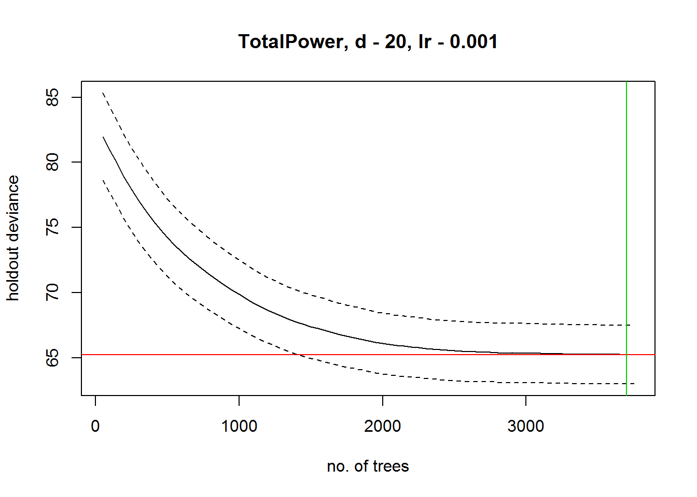
##
## mean total deviance = 82.838
## mean residual deviance = 52.837
##
## estimated cv deviance = 65.224 ; se = 1.725
##
## training data correlation = 0.735
## cv correlation = 0.601 ; se = 0.024
##
## elapsed time - 0.93 minutessummary(gbmModel)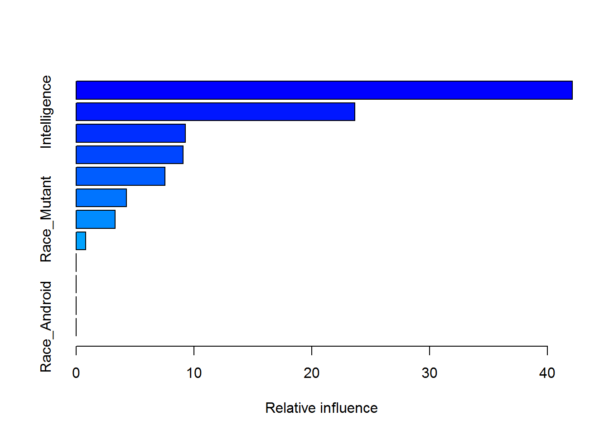
## var rel.inf
## Combat Combat 42.1908031
## Intelligence Intelligence 23.3232063
## Race_Human Race_Human 9.1917188
## Creator Creator 8.9862461
## Gender Gender 7.7090968
## Alignment Alignment 4.2868607
## Race_Mutant Race_Mutant 3.5157636
## Race_God Race_God 0.7963046
## Race_Animal Race_Animal 0.0000000
## Race_Demon Race_Demon 0.0000000
## Race_Asgardian Race_Asgardian 0.0000000
## Race_Android Race_Android 0.0000000gbm.plot(gbmModel,n.plots=5,write.title=F)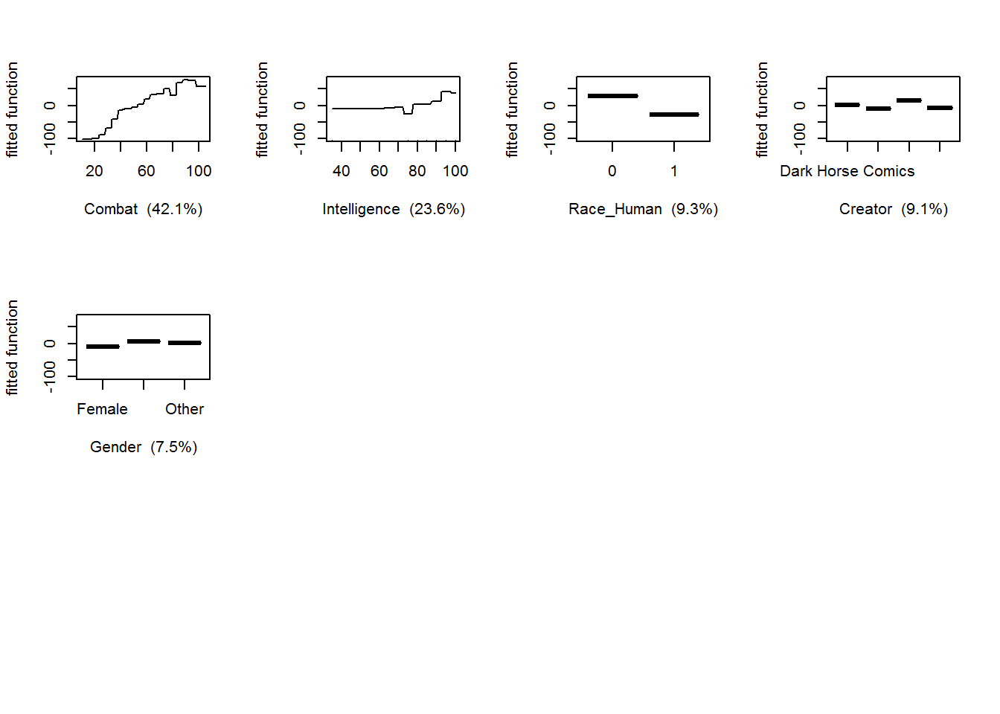
## But we are interested in gender, so let's plot that.
gbm.plot(gbmModel,variable.no=4,plot.layout=c(1,1))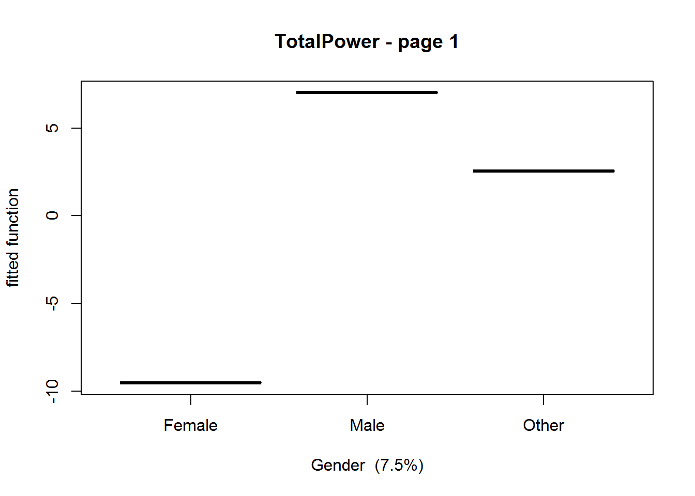
Interestingly, we see that there does seem to be some sort of bias towards more powerful male characters. However, bearing in mind that the predictive performance (as determined by the summary statistics) is not very high.